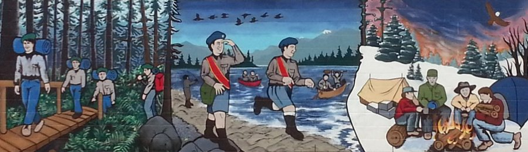

First Cedar Hill is a group that includes Beavers, Cubs, Scouts, Venturers, and Rovers. These 5 sections share a communal hall on different nights during the week. Inside this hall is a kitchen, washrooms, a storage room, a meeting room with tables, and a backyard. All of the food in the kitchen and gear in the storage room is shared between the different sections as they need them.
A group committee is made up of adult leaders, and manages the First Cedar Hill group. There are some people who are not a leader in a section, but have a role in the group. At least one member from each section is part of this committee. The committee has monthly meetings to discuss matters that concern the whole group. This committee is also in charge of the group’s money, and sections can come before the committee to request some. Some sections also fundraise and keep their own money, but still dip into this group money occasionally.
There is a hierarchy that scouting in Canada follows. It goes like this:
- Scouts Canada
- Council (ex. BC & Yukon)
- Area (ex. Greater Victoria)
- Group (ex. First Cedar Hill)
- Section (ex. Ventures)
Each level has its own leaders, both youth and adult. Each level is also responsible for the efficient running and execution of the level below it.
A scouting group is usually led by the group commissioner. They’re responsible for managing all aspects of the group, and are the main contact person for the group. Even small tasks around the hall frequently fall to the group commissioner. The success of a group depends upon the group commissioner, as well as the leaders. All members of scouting are volunteers, and without them, youth would not have these amazing programs.
